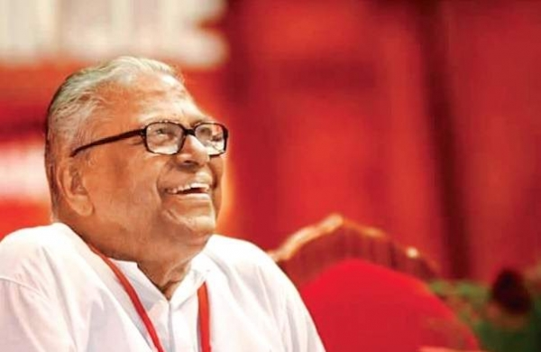

പാർലമെന്ററി ജീവിതം

സംഘടനാ രംഗത്ത് പടവുകൾ ചവിട്ടിക്കയറുമ്പോഴും അച്യുതാനന്ദന്റെ പാർലമെന്ററി ജീവിതം ഒട്ടേറെ തിരിച്ചടികൾ നേരിട്ടുണ്ട്. 1965-ൽ സ്വന്തം വീടുൾപ്പെടുന്ന അമ്പലപ്പുഴ മണ്ഡലത്തിൽ നിന്ന് നിയമസഭയിലേക്ക് ആദ്യമായി മത്സരിച്ചപ്പോൾ തോൽവിയായിരുന്നു ഫലം. കോൺഗ്രസിലെ കെ.എസ്. കൃഷ്ണക്കുറുപ്പിനോട് 2327 വോട്ടുകൾക്കായിരുന്നു തോൽവി. 1967-ൽ കോൺഗ്രസിലെ തന്നെ എ.അച്യുതനെ 9515 വോട്ടുകൾക്ക് തോൽപിച്ച് ആദ്യമായി നിയമസഭാംഗമായി. 1970ൽ ആർ.എസ്.പിയിലെ കെ.കെ. കുമാരപിള്ളയെയാണ് വി.എസ്. തോൽപ്പിച്ചത്. എന്നാൽ 1977-ൽ കുമാരപിള്ളയോട് 5585 വോട്ടുകൾക്ക് പരാജയപ്പെട്ടു. ഈ പരാജയത്തിനു ശേഷം കുറേക്കാലം പാർട്ടി ഭാരവാഹിത്വത്തിൽ ഒതുങ്ങിക്കഴിഞ്ഞു.
1991-ൽ മാരാരിക്കുളം മണ്ഡലത്തിൽ നിന്ന് നിയമസഭയിലേക്കു മത്സരിച്ചു. കോൺഗ്രസിലെ ഡി.സുഗതനെ 9980 വോട്ടുകൾക്കു തോല്പിച്ചു. എന്നാൽ 1996-ൽ കേരളത്തിലെ രാഷ്ട്രീയ വൃത്തങ്ങളെ അപ്പാടെ അമ്പരിപ്പിച്ചുകൊണ്ട് മാർക്സിസ്റ്റു പാർട്ടിയുടെ ഉറച്ചകോട്ടയായി കരുതപ്പെട്ടിരുന്ന മാരാരിക്കുളത്ത് അച്യുതാനന്ദൻ തോൽവിയറിഞ്ഞു. പാർട്ടിയിലെ തന്നെ ഒരു വിഭാഗമായിരുന്നു അച്യുതാനന്ദന്റെ തോൽവിക്കു പിറകിലെന്ന് പിന്നീടു നടന്ന പാർട്ടിതല അന്വേഷണങ്ങളിൽ തെളിഞ്ഞു. ഈ പരാജയം പക്ഷേ, പാർട്ടിയിൽ അച്യുതാനന്ദനെ ശക്തനാക്കി.
2001-ൽ ആലപ്പുഴ ജില്ല വിട്ട് മാർക്സിസ്റ്റു പാർട്ടിയുടെ ഉറച്ച സീറ്റായി ഗണിക്കപ്പെടുന്ന പാലക്കാട് ജില്ലയിലെ മലമ്പുഴ മണ്ഡലത്തിൽ നിന്നാണ് ജനവിധി നേടിയത്. എന്നാൽ കണ്ണൂർ ജില്ലയിൽ നിന്നു മത്സരിക്കാനെത്തിയ സതീശൻ പാചേനി എന്ന ചെറുപ്പക്കാരനുമേൽ 4703 വോട്ടിന്റെ ഭൂരിപക്ഷമേ നേടാനായുള്ളൂ. അതുവരെ എല്ലാ തിരഞ്ഞെടുപ്പുകളിലും സി.പി.എം. സ്ഥാനാർത്ഥികൾ ഇരുപതിനായിരത്തിലേറെ വോട്ടുകൾക്ക് ജയിച്ചുകൊണ്ടിരുന്ന മണ്ഡലമാണ് മലമ്പുഴ. 2006-ൽ ഇതേ മണ്ഡലത്തിൽ ഇതേ എതിരാളിയെ 20,017 വോട്ടുകൾക്കു തോൽപിച്ച് വി.എസ്. ഭൂരിപക്ഷത്തിലെ കുറവു നികത്തി.
പാർലമെന്ററി പ്രവർത്തന രംഗത്ത് ഒട്ടേറെക്കാലമായി ഉണ്ടെങ്കിലും അച്യുതാനന്ദൻ ഇതുവരെ അധികാരപദവികളൊന്നും വഹിച്ചിട്ടില്ല. 1967ലും 2006ലുമൊഴികെ അദ്ദേഹം ജയിച്ച തിരഞ്ഞെടുപ്പുകളിലെല്ലാം പാർട്ടി അധികാരത്തിനു പുറത്തായതാണു പ്രധാനകാരണം. 67-ൽ കന്നിക്കാരനായിരുന്നതിനാൽ മന്ത്രിസ്ഥാനത്തേക്കു പരിഗണിക്കപ്പെട്ടില്ല. 1996-ൽ സി.പി.എംന്റെ മുഖ്യമന്ത്രി സ്ഥാനാർത്ഥിയായി അനൌദ്യോഗികമായി അംഗീകരിക്കപ്പെട്ടിരുന്നെങ്കിലും മാരാരിക്കുളത്തെ തോൽവിയോടെ അതു നടക്കാതെപോയി. 2006ലെ നിയമസഭാ തിരഞ്ഞെടുപ്പിന്റെ ആദ്യ ഘട്ടങ്ങളിൽ പാർട്ടിയുടെ സ്ഥാനാർത്ഥിപ്പട്ടികയിൽ നിന്നുതന്നെ ഒഴിവാക്കപ്പെട്ടിരുന്നെങ്കിലും പാർട്ടി പ്രവർത്തകർക്കിടയിലും പൊതുജനങ്ങൾക്കിടയിലും പ്രതിഷേധമുയർന്നതിനെത്തുടർന്ന് അദ്ദേഹത്തെ സി.പി.എം. മത്സരരംഗത്തിറക്കുകതന്നെ ചെയ്തു.
Back to Home